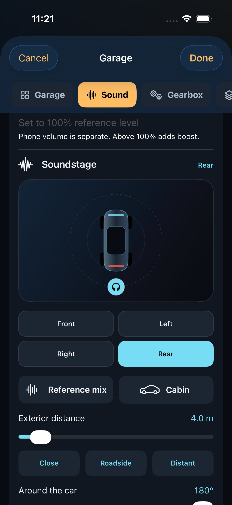
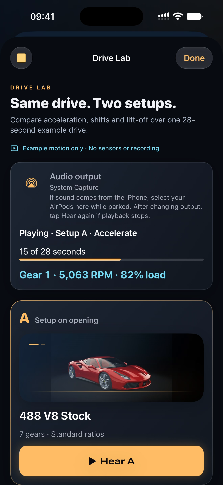

Free to download, with optional Pro subscriptions. iOS 17 or later; paired Apple Watch optional.
Hear revs, shifts and lift-off sound respond to your driving. Powertrain Lab uses iPhone motion to drive a simulated engine and gearbox. Compare your options while parked, then keep the sound and gearing you enjoy. No vehicle adapter or app account needed. It does not read pedals or control the car.
Set up and make changes while parked. The driver must not read or operate the screen while moving. Use a secure mount and a volume that lets you hear your surroundings.
Your garage. Your soundstage.
Explore 26 engine characters. For recorded cars, choose the front, rear or either side, adjust exterior angle and distance, and blend in the cabin sound. Compare your mix before committing to a setup. Spatial sound follows each source event; available lift-off and shift detail vary by car.


Same drive. Two setups.
Drive Lab lets you hear your current and draft setups over the same 28-second example drive. Compare acceleration, shifts, coasting and braking, with live simulated RPM, gear and load. All 26 engine characters can be auditioned without Pro.
- While parked, open Garage and choose a different engine or edit its character and gear ratios.
- Open Drive Lab · Compare two setups. A is your setup on opening; B is your library draft.
- Tap Hear A, then Hear B. Each starts the same example drive from the beginning. Try Economy, Normal or Sport for both.
- Return to the library and tap Done to apply a choice, or Cancel to keep your original setup. Recorded 488 has a daily driving allowance; Pro unlocks unlimited 488, other Pro engines, and customized sound and ratios.
Drive Lab uses example motion, not sensors or a recording of your trip. Comparing a setup does not apply it.
Listen before choosing
Open Garage before starting a session. Search or filter 26 engine characters, from V8s and V12s to flat-sixes and a rotary, then select a car and tap Hear. Every voice can be previewed for up to 30 seconds without Pro. Recorded stock voices blend exterior exhaust and driver-seat perspectives, with supported lift and gearshift detail; synthesized voices have their own character controls. Move the Throttle slider to rev, then tap Idle to hear the virtual engine settle. The displayed RPM comes from this sound model; the preview does not read motion, sense your pedals or control a driving session. Changing a voice or character, leaving the screen or making the app inactive stops the preview. Hear and Drive Lab do not use the daily driving allowance.
How the current session setup works
Set up before moving. The app estimates motion; it is not a vehicle instrument or safety system.
- Park safely and mount your iPhone without blocking your view, airbags or vehicle controls.
- In Garage, choose your sound, Economy, Normal or Sport, and a comfortable volume; tap Done to apply your choices. Cancel discards unapplied changes. A passenger can operate Manual shifts. Select your audio output while parked. Optional location helps speed estimation.
- Return to setup, tap I’m parked · Calibrate and remain still for about two seconds. When the baseline is ready, tap Start engine before moving.
- With location speed enabled and Precise Location allowed, a reverse-first departure is supported. Without usable location, pull away forward and straight first so the app can learn direction. Do not make unusual maneuvers to test the app.
- Tap Stop session while safely parked. Calibrate again for each new session.
Guided setup and Apple Watch
The first-launch setup guide explains mounting, audio output, calibration and starting a session with animated examples. Open the setup guide again from Help whenever needed.
Open Apple Watch in the iPhone app for installation instructions and connection status. For an App Store installation, open Apple's Watch app on iPhone, choose My Watch, find Powertrain Lab under Available Apps and tap Install. In TestFlight, open Powertrain Lab's test details on iPhone and install its watch companion there. A paired watch running watchOS 10 or later is required; no separate watch purchase is needed.
The companion shows the simulated gear and offers large minus and plus controls when the iPhone's active session is in Manual. Use it while parked or as a passenger, worn on the wrist. Do not attach it to an airbag or steering-wheel controls. Disconnected or stale controls are disabled, and requests are never queued for later. It does not control the vehicle's transmission.
Change engine without recalibrating
During a calibrated session, a passenger or parked user can tap Change engine and choose an available engine. Calibration, motion estimates and recording continue. The engine uses its own gearbox, or your saved custom gearbox with Pro. The driver must not operate the screen while moving. Full editing, previews and purchases remain available after stopping the session.
Free and Pro
Recorded 488 includes five minutes of engine-session sound each day with its standard character and gearbox. New installations start with the 488; existing choices are kept. When the allowance is used, unlimited Apex V10 continues automatically without ending the session or calibration. All transmission modes, 30-second parked previews and Drive Lab are included. Monthly and yearly Pro unlock the same features: unlimited sessions with every engine, supported listening-position and sound controls, custom gear ratios (up to eight gears), and up to 12 active named setups. The collection has 24 recorded cars and two synthesized voices, Apex and Muscle. Each car has its own virtual gearbox and shift map. These are sound interpretations, not exact factory recreations or manufacturer endorsements. No app account is needed.
The daily allowance counts playing Recorded 488 session audio, including idle and neutral revs. At 0% engine volume or during pauses it does not count. Previews and Drive Lab do not use it. The allowance renews at midnight UTC based on an internet time check. Remaining time works offline; after reopening the app, a connection is needed to authorize a new day. Time-check failures do not block Apex or verified Pro. A running Apex session does not switch back automatically.
Explore Pro in Garage shows Apple's localized prices and billing periods before you choose a plan. Monthly and yearly plans have the same benefits; yearly is billed upfront. Payment is charged to your Apple Account and the selected plan renews automatically unless cancelled. Apple's Standard Terms of Use apply.
Choose Free or Pro
- Hear the collection
- Free and Pro: all 26 parked previews and Drive Lab comparisons.
- Use engine sound during a session
- Free: unlimited Apex and five minutes of standard 488 each UTC day. Pro: unlimited sessions with every engine.
- Choose how to shift
- Free and Pro: Automatic or Manual, plus Economy, Normal and Sport. Pro adds custom ratios with up to eight gears.
- Make it yours
- Pro: supported custom sound controls and up to 12 named setups. Existing setups remain viewable and exportable after Pro ends.
Restore, manage or cancel
Use Restore purchases in the Pro screen with the Apple Account used for the subscription. A pending purchase unlocks after Apple confirms it. If plans or access cannot be checked, keep using Free, check your connection and try again. Support does not need your password.
Use Manage subscription in the Pro screen to view or change the plan in Apple's subscription interface. Turning off renewal keeps access for its remaining valid period. Deleting the app does not cancel a subscription.
Keep your setups
Save a name and your sound, character, transmission and volume choices with Pro. Up to 12 setups can be active; archive one to make room, then restore it later when there is a free slot. Local storage is bounded and will show a message if full. Each session needs a fresh parked baseline. Separately, locally learned mount direction helps alignment start sooner when you use the same mount the same way.
If Pro ends, saved and archived setups remain viewable, archivable, restorable and exportable. Using a saved setup follows the same daily allowance and Pro rules. Custom sound character and custom gear ratios require Pro. Your saved preferences are preserved; free access uses an available included setup when paid choices are unavailable; the app does not switch an active session's sound because subscription status changed.
Export all setups writes names and settings as JSON to a destination you choose. It includes no motion, location or purchase data. There is no import or cloud-sync feature. Restoring purchases restores eligible Pro access, not deleted setup files. If stored data cannot be read, the app preserves it and offers an export when possible; contact support before deleting it.
Engine level and music
Engine level ranges from 0% to 200%. Above 100% boosts the engine relative to other audio, with peak protection that may sound compressed. It does not change the phone’s system volume or promise twice the perceived loudness. Start low and adjust while parked. Previews use the engine level selected in Garage. Tap Done to apply that level to your next session; Cancel discards unapplied choices.
Start music in your music app before starting the engine session. Optional Lower other audio asks iOS to reduce other audio while the engine plays; changes apply the next time the engine starts. The consumer app does not provide app-to-app playback controls.
Common questions
How does the sound follow my driving?
After a parked calibration, iPhone motion and optional location speed feed a simulated engine and gearbox. Revs and shifts respond to the estimated motion. Powertrain Lab does not connect to the vehicle’s pedals, engine computer or controls.
Do I need a vehicle adapter?
No OBD adapter or account is required. Secure the iPhone in a stable mount, choose your audio output and calibrate before moving. Keep the phone fixed throughout the session.
Can I try the sounds without driving?
Yes. Every engine has a free parked preview. Drive Lab also compares two setups over the same example drive, including acceleration, shifts and coasting. It uses example motion and does not start a driving session.
I paid, but Pro has not appeared. What should I do?
Open Explore Pro and check the displayed purchase status. A pending purchase needs Apple's approval; it is not a completed subscription. If you already have an active subscription, use Restore purchases with the same Apple Account. You do not need to purchase again. If access still cannot be verified, contact support with the app version and the displayed message. Do not send passwords, card information or raw receipts.
Why did my previewed engine not change my drive?
Hearing a preview or a Drive Lab comparison does not apply settings. Return to Garage and tap Done. If the choice needs Pro, the app explains this before applying it. Cancel keeps your previous setup.
Why won't calibration finish?
The phone and vehicle must stay still. Follow the status message and check permissions in iPhone Settings. A physical iPhone with device-motion support is required for live calibration; stationary sound previews do not need it.
Why did sound pause?
An interruption, output change, stale motion or changed mount can pause sound. Wait until safely parked, check route and volume, and follow the message. Use Start engine when available or stop and recalibrate if requested. After an interruption, playback can resume if iOS permits it, the output is unchanged and motion remains ready. Stop session cancels this recovery. In the background, motion recovery waits up to one minute, a disconnected output waits up to one minute when location speed is on, and a phone call can wait up to 15 minutes. The session stops if recovery cannot complete. Check any continuing problem while parked. Do not adjust the mount or troubleshoot while moving.
Why is speed approximate or hidden?
Speed is an estimate, not vehicle data. Without usable location it can drift; low confidence can hide the reading. Quiet motion cannot prove a stop. Without usable location or a well-learned mount direction, corner response is more cautious. Do not use the app for navigation, speed-limit compliance or other driving decisions. It does not recognize traction, drifting or road elevation.
Can I use a car speaker or lock the screen?
Select an output using iOS while parked. Delay and behavior depend on your phone and sound system; low Bluetooth latency is not guaranteed. Active audible sessions use iOS audio and optional location services, but continuous locked-screen motion is not guaranteed. Setup ends when the app backgrounds before the engine is running.
Contact support
Email mwsupplylimited@gmail.com. Include app version, iPhone model, iOS version, audio output and what happened. A screenshot taken while safely parked can help. Share only relevant details; do not send passwords, payment-card information or precise routes.
Read the privacy policy for permissions, Apple purchase handling, local data and support correspondence.